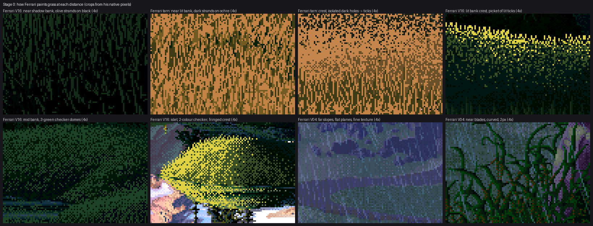
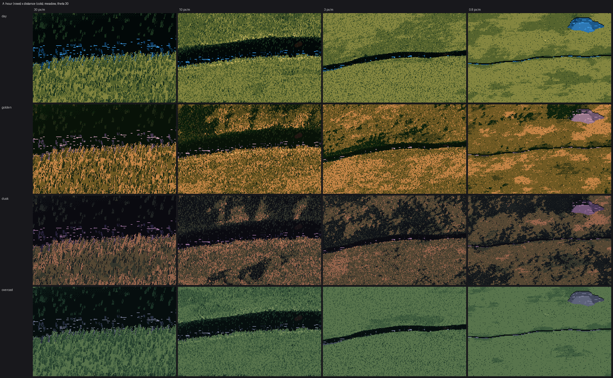
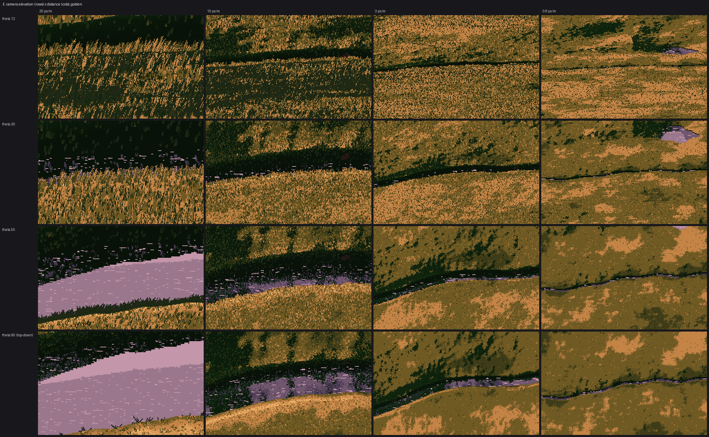

Grass at every distance: the vocabulary and the value design
Part 5 of the grass-lod tutorials. Code: code/grasslod/marks.py (paint_tufts, quantize_base), render.py (value_design), world.py, palette.py, painter.py.
Parts 1–4 are about making marks hand off. This page is about which marks, for grass, and the value design they sit on. It's the craft half of my study, and it's less finished than the method half, so the page ends with what isn't there yet. Read those notes before you build on this.
A standard to hold this page to: David now treats Ferrari as the teacher of technique, and the real world, seen through photographs, as the standard of what's there. I learned almost all of the rules below from Ferrari's pixels, and I judged my work mostly against his pixels. Where the rules are about how to make a mark, I trust them. Where they're about what grass looks like at a distance, check them against photos; I didn't enough.
1. Read the reference by distance

Every grass passage I could find in Ferrari's native pixels (Mirror Pond V16, the tarn, the rain scene V04), at 4×.
What I read in them, ordered by distance:
| distance | what the pixels are | colours |
|---|---|---|
| near, lit (tarn bank) | 1 px vertical strands, 4–10 px, of the darker steps on a lit base; about half the base shows | 3–4 |
| near, shadow (V16) | 1 px olive strands on black, leaning, curving | 3 |
| a receding bank (tarn), crest → foot | isolated black holes on flat ochre, then a dense band of short brown ticks, then strands | 2, then 3 |
| lit crest over a shadowed body (V16) | a picket of bright ticks along the crest only | 4 |
| middle distance in shade (V16 mid bank) | an ordered checker of close greens shaped into domes | 3 |
| far, lit (islet) | 2-colour checker; form turned by the density of the lit colour | 2–3 |
| far slopes (V04) | flat value planes, dithered only at their seams | 2–3 per plane |
Three readings shaped everything:
- A receding bank is already a handoff. The tarn bank runs from crest (far) to foot (near) in one mass, and changes its marks three times. A zoom has to do in time what he did down the bank.
- Minority strokes. In a lit mass the marks are the darks; in a shadowed mass they're the lights. The base is the majority colour and is flat.
- Far off, only the extremes survive. The farthest marks are the deepest darks (the holes between tufts), not mid tones.
I also counted colours per region (PIL Counter over a crop): three colours cover 97% of the near shadow bank, four cover 95% of the lit bank. Few colours at every distance; distance changes the shape of the marks, not how many colours they use.
2. The palette is the light; the canvas is steps
Paint indices, not colours. Each light family is a band of steps on one 7-step ramp per material (green and straw), and the hour is a palette swap (palette.py: day, golden, dusk, overcast):
0 core black 1 deep shadow 2 shadow 3 reflected/olive 4 halftone 5 lit 6 sun-struck tip
The shadow family paints in steps 0.2–2.8 and the lit family in 3–5. Step 6 is reserved for tips on crests. When every lit tuft could use it, the meadow read acid-yellow; reserved, it marks the crests where low sun actually catches the tips.
3. The stroke rules
All of these live in paint_tufts, and every one is written as a dithered decision per part 1.
The tuft stands on the local base step. Each tuft reads the integer step the base layer shows at its root, and its strokes are whole steps from that:
v = R.qbase[cy, cx].astype(float)
Before this, tufts rounded their own design value independently, so a stroke meant to be "one step darker than the base" could be a 4 painted over a 4: an invisible stroke. I found it at 8×, an hour after a related debug view had told me something else was also wrong:

Pixels no tuft wrote, painted magenta: only 52% of a patch meant to be densely stranded was marked, and the gaps gathered into flat blotches. Low coverage and invisible strokes looked the same at 8×: flat mid-tone patches. Debug views like this one tell them apart.
Minority strokes, by where the tuft sits in its family:
pos = np.clip((v - bot_f) / (top - bot_f), 0, 1)
p_light = np.where(lt, np.clip(mp["light_bias"] - 1.3 * pos + 0.4 * crown, 0.06, 0.85), 0.9)
light = ul < p_light
On a lit base, most strokes are dark. In shadow almost all are light: olive strands on black. crown lets the taller crowns of clumps (a 0.3–2 m field) take more light strokes.
Contrast inside the stroke grows with its size. A dark stroke is −1 step; −2 strokes start to appear from ell 2 and −3 from ell 4, each blade crossing over at its own ell. Up close the gaps between blades are deep; at a distance they're sub-pixel and merge. A lit blade optionally gets a partner column one step toward the base (the stem) and a dark gap column beside it, the [gap][highlight][stem] pair the master-copy student measured in Ferrari's shadow bank.
Hold the vertical down to the far bank. Between ell 0.6 and 3, every mark is at least a 1×2 vertical tick (p_tick, dithered per blade). My marks turned into isotropic single pixels around ell 2, which the critic called sandpaper five rounds running. Grass is vertical, and a 1×2 tick is the smallest mark that still says so.
Far off, a dot is a hole. On lit ground single-pixel marks go about two steps dark (and only one step in bodies up close):
far_hole = np.clip((1.6 - ell) / 0.8, 0, 1) * np.clip((ell - 0.12) / 0.3, 0.35, 1)
dotd = np.where(lt, 1.0 + (mp["dot_depth"] - 1.0) * np.maximum(far_hole, edge * 0.7), 1.0)
I first used balanced ±1 dots far off "to preserve tone", and got a soup of five colours. Ferrari keeps only the extremes: flat ochre and black holes.
Twice as directional as nature. Blade spread and wind lean are small (spread=0.05, wind_lean=0.35). The observation student measured Ferrari's grass as about twice as directional as photos, and a looser fan read as camouflage at 8×.

Near lit grass at 8×, mine (left) against his tarn bank (right). Colours covering 90% of pixels: 4 vs 3. Mean vertical run 2.9 vs 3.5 px, horizontal 1.7 vs 1.6 (code/stats.py). His strands are longer and his base shows more (0.52 vs 0.36).
4. Fringes and counterchange
The edge of a grassy mass against water or sky is a fringe of separate blades, never a cut line. A tuft is a silhouette tuft when there's background just above its root:
probe = np.clip(ry - np.maximum(2, (0.6 * ell).astype(int)), 0, H - 1)
bgd = R.depth[probe, cx]
silh = ((bgd > y + mp["silh_gap"]) | (R.mat[probe, cx] != 1)) & (ell >= 2.5)
ell = np.where(silh, ell * mp["silh_len"], ell) # 1.8x: ungrazed lips, full height edge-on
Its blades vary 3:1 in height and droop more. Two rules made it read:
- Only the 1 px blade line shows against a background. Partner and gap columns thickened the fringe into a hedge.
- Counterchange every blade pixel over a background, away from what's actually behind it:
push_dark = np.where(R.mat[Y, X] != 1, bv >= 3.0, bv >= vv - 0.5)
dark = np.minimum(np.minimum(vv, (vv - 3.0) * 0.5 + 1.6), bv - mp["cc_step"]) # keeps two darks of structure
newv = np.where(push_dark, dark, np.minimum(np.maximum(vv, bv + mp["cc_step"]), 5.0))
"What's actually behind it" matters over water, because the water shows either the sky tint (light) or the mirrored bank (dark). painter.water_background computes which, per pixel. When I treated all water as light, blades over the dark reflection went dark and vanished.

The fringe at 8× (left) against his (right): thin dark blades, heights varying, two darks of structure. His blades curve and group in V and Y pairs, which mine don't.
5. The value design, which the far views are made of
Up close the marks carry the picture. From about 3 px/m out, the value design under them is the picture. value_design returns a continuous step per pixel and the light family. What had to go in, in the order I discovered it:
- Exaggerated facing. Physical Lambert on gentle ground seen at 30° is nearly flat: my first value field was one speckle at every zoom. The slope-to-sun term is ×2 at pixel scale plus ×1.5 more at 30 px (bank and hill scale).
- Masses of masses. Convexity summed at 6, 16 and 48 px, so crests are lighter and folds darker at every zoom.
- Two families that never touch, split by a soft light weight through a world-anchored threshold, so terminators and shadow edges are dithered fringes.
- Cast shadows marched in world units and simplified: relief under 8 px casts none (anchoring, §5).
- Masses that belong to the ground, not the light: a 10–80 m field of drier knolls (lighter) and wet flushes (darker), plus 8–60 m mottling. Without it, day and overcast had no structure at all at a distance, because every mass came from low-sun shadow.
- Flat planes on lit ground, checker on shaded ground. The base is quantized into whole steps. Lit masses dither only in a narrow seam (
band_w=0.7): flat, like his lit ochre. Shaded and middle masses use a 4×4 ordered checker everywhere (band_w_shadow=0), like his V16 mid bank. Random stipple there read as sandpaper.

Golden ladder (30, 8, 2, 0.6 px/m) once 1–4 were in: the far bank at 8 px/m has dark drifts running down the slope.
The ecology parameters reach the pixels through these fields. Wetness darkens and greens; dryness and grazing turn patches to the straw ramp (by patch, never as speckle through the green); grazing shortens the sward and removes tussocks; species sets height, tuft spacing and stiffness.

Moisture (rows) × grazing (columns), day, 12 px/m.

Hour (rows) × distance (columns). Golden and dusk are the strongest rows.

Camera elevation 12°, 30°, 55°, 90° × distance. Top-down works because blades lean in world space and the lean is projected (lean_top).
6. What isn't there yet
In the order I'd work on them, with what I think each needs:
- The far third reads as a material map, not a landscape. At 0.3–2 px/m the frames are a well-behaved tone field with checker seams and blotches (the last frames of the strip). Photos of grassland at that distance (hillside, aerial) are carried by landform light and a few legible shapes: a dark gully, a lit shoulder, a field edge, a line of taller growth along a stream. My far views have masses; they don't have shapes. I think this needs the world to supply a few designed features, and the value design to spend contrast on them rather than on even mottling.
- The middle band of a receding bank. Ferrari's tarn bank has a distinct darker belt of short ticks between the crest holes and the near strands. The coverage curve has the hump, but the belt doesn't read (perspective bank). My guess: his ticks there are a single mid colour at high density, touching into vertical runs, while mine vary in value and stay separate.
- The shaded bank at 20–30 px/m is a murk of three near-blacks. His is crisp olive strands on black: fewer, longer, higher-contrast light strokes.
- Near strands are shorter and more broken than his, and let less base through.
- Daylight has masses now, but they read as blotches rather than designed shapes. Much of Ferrari's midday drama is composition (dark banks framing a lit middle ground). I think that belongs to the director, not the grass painter.
- Low cameras comb: at 12°, long diagonal strands everywhere.


What I'd do first, starting again: put photos at the matching distance beside every comparison (photo | mine | Ferrari), and build a perspective test camera, so the handoff can be judged the way his banks show it, crest to foot in one picture.